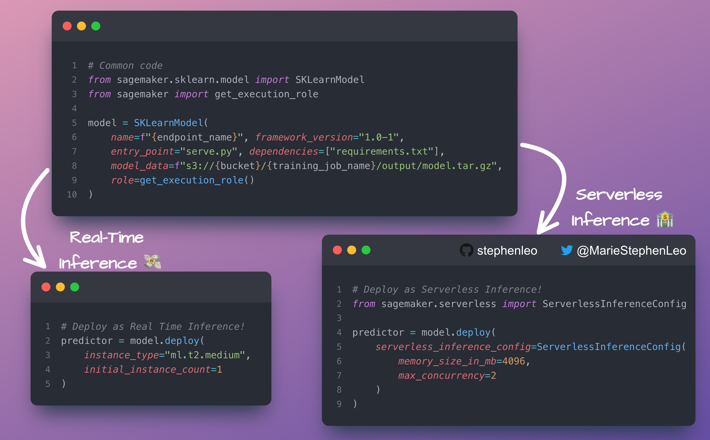
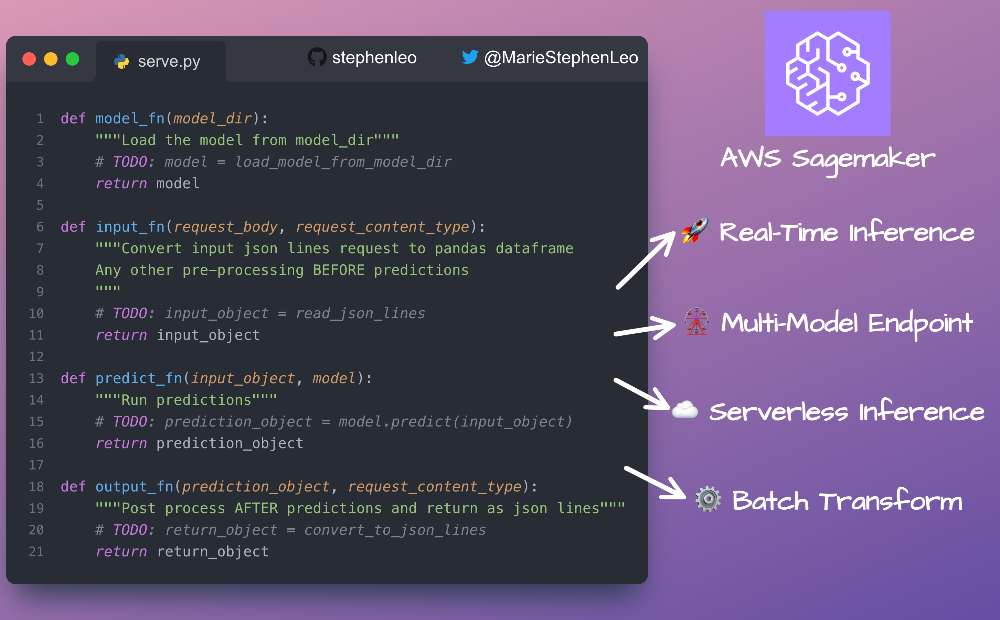

🧘 AWS Sagemaker
Contents
🧘 AWS Sagemaker#
☁️ AWS Sagemaker Serverless#
Major cost savings on ML endpoints with AWS Sagemaker!
In the past when you deploy an ML model as a Real-Time Inference endpoint on Sagemaker, you’ve had to keep the deployment instance running 24*7
This is a waste of money if your ML model receives sporadic traffic with some periods of 0 traffic as your instance is running idle
Enter Sagemaker serverless!
During times when there is no traffic, Serverless Inference scales your endpoint down to 0, helping you to minimize your costs!
There will be some cold start when there is traffic after a long period of inactivity. In my experience with scikit-learn models, the cold start is <2s!
Implement with just one line of code change
📖 Docs: https://docs.aws.amazon.com/sagemaker/latest/dg/serverless-endpoints.html
#datascience #dataanalytics #dataengineering #aws #gcp #azure #python
{kind=link}
🚀 AWS Sagemaker Inference#
AWS Sagemaker is one of the easiest ways I’ve come across for deploying Machine Learning models as a Data Scientist.
Create a simple
serve.pyfile with just four functionsmodel_fn: To load the model from a file
input_fn: Convert input JSON data into a pandas dataframe. Do any other preprocessing BEFORE model predictions here
predict_fn: Run the model predictions
output_fn: Post-process the predictions and convert them to JSON
As a pre-requisite, your trained model should be zipped as a tar.gz file on S3
Use the same http://serve.py for all of the below deployment methods!
Real-time inference
Multi-model endpoint
Serverless inference (the topic of yesterday’s post)
Batch transform
The entire process is massively simplified if you use the JSON lines format (a topic for another post).
📖 Docs: https://sagemaker.readthedocs.io/en/stable/frameworks/sklearn/using_sklearn.html
#mlops #datascience #dataanalytics #dataengineering #aws #sagemaker #gcp #azure #python
{kind=link}